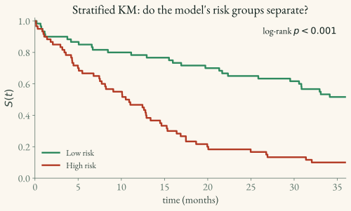

Kaplan-Meier Curves
The Kaplan–Meier (KM) estimator is the standard non-parametric way to estimate the survival function S(t) for a cohort or group—no covariates and no assumed curve shape. It is a useful descriptive reference, not a personalized prediction model. Like the other standard methods here, it relies on independent censoring (1.2).
Estimator
KM walks through the event times and multiplies together the fraction surviving each one:
\hat{S}(t) \;=\; \prod_{t_i \le t}\Big(1 - \underbrace{\frac{d_i}{n_i}}_{\text{fraction who fail at } t_i}\Big)
where, at each distinct event time t_i:
- d_i — the number of events (e.g. deaths) at t_i.
- n_i — the number at risk just before t_i: everyone who has neither had the event nor been censored yet (the risk set from
2.1).
Each factor (1 - d_i/n_i) is the conditional probability of remaining event-free through t_i given survival up to it; the running product produces the estimated survival curve—a step function that drops at events and stays flat between them.
Worked example — five patients. Times (★ = event, ○ = censored): 3★, 5★, 7○, 8★, 10○. | Event time t_i | At risk n_i | Events d_i | Factor 1 - d_i/n_i | \hat{S}(t) | |—|—|—|—|—| | 3 | 5 | 1 | 4/5 = 0.80 | 0.80 | | 5 | 4 | 1 | 3/4 = 0.75 | 0.80 \times 0.75 = 0.60 | | 8 | 2 | 1 | 1/2 = 0.50 | 0.60 \times 0.50 = 0.30 |
The censored patient at t = 7 produces no drop — but it lowers the at-risk count n_i from 3 to 2 by the time of the event at t = 8, which is how censoring still informs the curve. The patient censored at 10 ends the followed range.
In model evaluation
KM curves are used to:
- Visualize risk-group separation — plot KM for high- vs. low-risk groups defined by the model’s threshold (the figure below).
- Check group-level agreement — compare the cohort-average predicted survival with the observed KM curve. This is a coarse check; horizon-specific calibration curves are more informative.
- Communicate results — a familiar clinical summary when confidence bands and numbers at risk are included.
Log-rank test
When comparing two KM curves (e.g. high- vs. low-risk groups), the log-rank test assesses whether the separation is statistically significant by comparing observed vs. expected events at each time point.
from lifelines.statistics import logrank_test
result = logrank_test(T_high, T_low,
event_observed_A=E_high,
event_observed_B=E_low)
print(result.p_value)Choosing a risk threshold
A survival model outputs a continuous risk score; to draw the stratified KM plot below you must first cut that score into high- and low-risk groups at some threshold \tau. Three common ways to choose \tau, in increasing order of how much they lean on the outcome:
| Method | Rule | Pros / cons |
|---|---|---|
| Median | \tau = \text{median}(r) | Simplest; always a 50/50 split; needs no outcome labels. But the true cutpoint may not sit at the median, and it can mislead on skewed scores. |
| Youden index | \tau = \arg\max_\tau\,[\text{sens}(\tau) + \text{spec}(\tau) - 1] at a fixed time horizon | Grounded in diagnostic accuracy; balances false positives against false negatives. But requires choosing a horizon and binarizing the outcome. |
| Max log-rank | \tau = \arg\max_\tau\,(\text{log-rank statistic between the two groups}) | Directly maximizes KM separation; needs no horizon. But scanning many cutpoints inflates significance — see the warning. |
Development→test discipline (all three methods). Fit \tau using only development data, freeze the entire procedure, then apply it once to the test set. If the model itself was fit on the training set, prefer a separate validation set or nested cross-validation for outcome-guided cutpoint selection. A median training cutpoint does not use outcomes and is a simpler baseline.
import numpy as np
tau = np.median(risk_scores_train) # or the Youden / max-log-rank cutoff, fit on TRAIN
high_risk_test = risk_scores_test >= tau # apply the frozen cutoff to TESTWarning — max log-rank inflates significance. Scanning many candidate thresholds and keeping the best is multiple testing: the resulting log-rank p-value is not a valid significance test. Validate the chosen split on a held-out set or independent cohort, and never report the training p-value as a significance result.
The Youden horizon is the same one you would use for the time-dependent AUC; the max-log-rank search is the cutpoint cousin of the (removed) log-rank training loss. Package calls: median is plain NumPy; Youden reads the cutoff off the IPCW time-dependent ROC in scikit-survival (4.4); max log-rank loops lifelines.statistics.logrank_test (4.2) over candidate \tau.
Plotting
from lifelines import KaplanMeierFitter
kmf = KaplanMeierFitter()
kmf.fit(T, E, label="All patients")
kmf.plot_survival_function()Stratified plot (the evaluation use case)
The clinically meaningful figure overlays the model’s risk groups on one axis, with at-risk counts underneath (see 04_packages/4.2_lifelines.md):
from lifelines import KaplanMeierFitter
from lifelines.plotting import add_at_risk_counts
import matplotlib.pyplot as plt
high = risk_scores >= tau # tau from "Choosing a risk threshold" above
ax = plt.subplot()
km_hi = KaplanMeierFitter().fit(T[high], E[high], label="High risk")
km_lo = KaplanMeierFitter().fit(T[~high], E[~high], label="Low risk")
km_hi.plot_survival_function(ax=ax)
km_lo.plot_survival_function(ax=ax)
add_at_risk_counts(km_hi, km_lo, ax=ax)
Pair the figure with the log-rank test p-value, and choose tau as in Choosing a risk threshold.
Key takeaways for applied ML scientists
- It is a useful reference prediction. A covariate-free KM curve is a sensible baseline for the Brier score; failure to improve on it suggests the model is not adding useful out-of-sample probability information over that window.
- A stratified KM plot is a communication tool, not a complete validation. Pair it with continuous-score metrics, uncertainty, calibration, and a transparent cutpoint rule.
- Censoring shrinks the at-risk set but never directly drops the curve. KM is unbiased under its censoring assumptions, not under arbitrary informative loss to follow-up.
- It can’t extrapolate or adjust for covariates — for individualized, covariate-aware S(t) you need a model (
2.1–2.4).
Limitations
- Univariate — does not adjust for covariates
- Cannot extrapolate beyond the last observed event